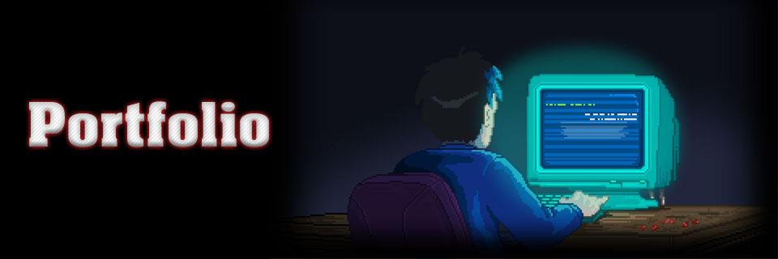

When designated the role of Sound Designer within a 2019 Game Jam I discovered my love and appreciation towards sound design and from that day I have consistently continued to learn more and develop my skills within the field both as a hobby and as a career opportunity. Through working on voice acting and voice modulation I had enough skills to begin my journey into sound design.
Below is a Vimeo link towards my demoreel. Most sounds had been created from the ground up by me into the scene and others had been gathered from free libraries. The final clip of God of War was an attempt at creating a demo scene within a limited time of 5 hours. This was to test productivity and to see if I could create a scene without overthinking and modifying sounds constantly.
Christopher Glass: Sound Design Demo Reel from Christopher Glass on Vimeo.
So, you want to know more about me? Well you see back in 2000 I was born as a little brat in the ripe ol' land of Northern Ireland. On that day... Okay I won't go that in-depth with my backstory. It wouldn't be as interesting as in TV or games since I can't do flashbacks. I was a student at Staffordshire University who studied Computer Games Programming and now voice acting on the side as a hobby. I also have begun extensively learning sound design in my spare time. Not to mention that I am also a full time teacher too.

In terms of my favourite games I would rank my top 5 games of all time as:

While studying I have been made to do work, whether it be from my own free will or the lectures are holding me hostage, I am not legally obliged to say... (send help). But seriously here are pieces of work which I have been creating over my time in university.

To start off the list of projects I will demonstrate the first work I ever completed in University, during fresher's week, my team and I completed this game to win the welcome week game challenge where we were required to make a game within a week. Here is the finished product. I completed all of the sprites aside from character sprites and worked on creating key features such as the level scroll and spawning elements.
<C# | Unity | Group Work >
Next on the magical list of games is my rendition of Pacman through my universities core module of Fundamentals of Game and Graphical Systems. The game was made utilising the universities own framework of S2D and been created from the ground up
<C++ | Visual Studio | S2D Framework >
Mario is here! He has been made using the SDL framework and his brother Green Mario is also here. Not that anyone cared about him.
<C++ | Visual Studio | SDL2 Framework >

I had to create a 3D scene, I may have went crazy from the looks of how this game turned out. A gameplay Video is on GitHub by clicking the image above. Send help. Again.
<C++ | Visual Studio | OpenGL Framework >
Programming games all the time isn't all I can do. I have a voice. And as much as it might bother people, I use my voice not to stand up against the oppressed or to yell about my rights. I use my voice in a much more meaningful way. I like to voice imaginative characters within video games at an amateur level. Nope, still doesn't sound good even when typing this.
Some of the companies I have worked with or are working with are:
If you wish to browse my online portfolio for voice acting, most of my auditions and roles can be found on My Voices.Com page
Contact
This page has been culled as of 01/12/2024 due to students being silly goofs. You know who you are...